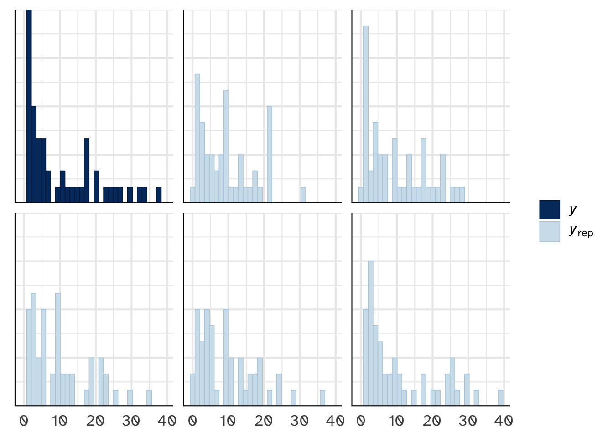
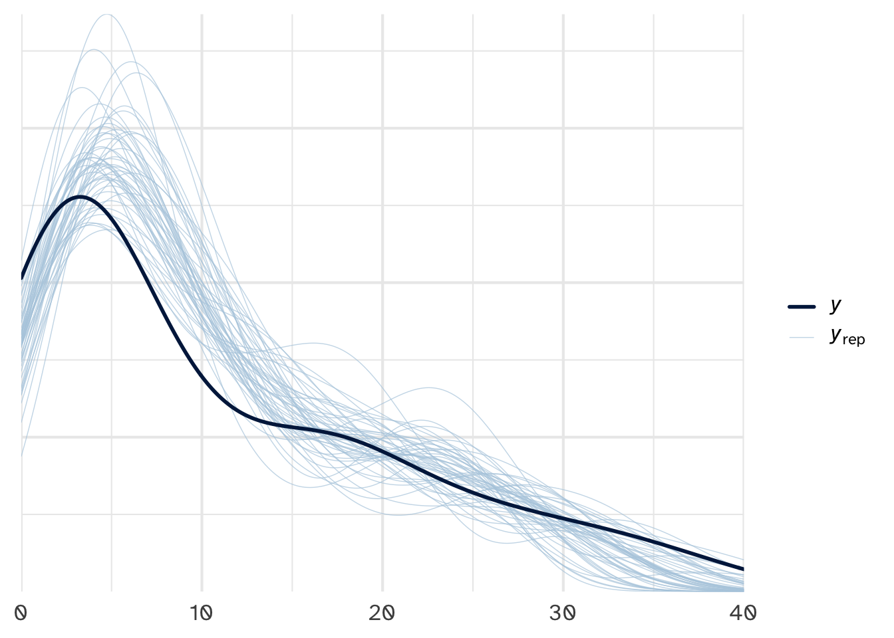

# A tibble: 1 × 6
state region gop_2016 laws historical percent_urban
<fct> <fct> <dbl> <dbl> <fct> <dbl>
1 california west 31.6 155 dem 95Day 20
Carleton College
Stat 340 - Fall 2025
\[Y_i | \vec{X_i} \sim N(\mu_i, \sigma^2)\] \[\mu_i = \beta_0 + \beta_1 X_1 + ... + \beta_k X_k\]
The equality_index data in the {bayesrules} package includes the observed number of anti-discrimination laws in each state, \(Y\) . Let’s model \(Y\) by a state’s percent_urban and its historical presidential voting patterns. The historical variable has 3 levels:
dem = the state typically votes for the Democratic candidategop = the state typically votes for the Republican (GOP) candidateswing = the state often swings back and forth between Democratic and Republican candidatesPriors for model 'normal_model'
------
Intercept (after predictors centered)
Specified prior:
~ normal(location = 11, scale = 2.5)
Adjusted prior:
~ normal(location = 11, scale = 26)
Coefficients
Specified prior:
~ normal(location = [0,0,0], scale = [2.5,2.5,2.5])
Adjusted prior:
~ normal(location = [0,0,0], scale = [ 1.79,51.23,57.71])
Auxiliary (sigma)
Specified prior:
~ exponential(rate = 1)
Adjusted prior:
~ exponential(rate = 0.097)
------
See help('prior_summary.stanreg') for more details\[Y_i | \vec{X_i} \sim \text{Pois}(\lambda_i)\] \[\log(\lambda_i) = \beta_0 + \beta_1 X_1 + ... + \beta_k X_k\]
Define data model \[Y_i \sim F(\theta)\]
In a GLM, \[g(E(Y_i | \theta)) = \beta_0 + \beta_1 X_1 + ... + \beta_k X_k\]
\(g\) is determined by the data model and called the link function
Question
What is the link function for normal regression? Poisson regression?


# A tibble: 4 × 5
term estimate std.error conf.low conf.high
<chr> <dbl> <dbl> <dbl> <dbl>
1 (Intercept) 1.71 0.311 1.30 2.09
2 percent_urban 0.0164 0.00361 0.0119 0.0211
3 historicalgop -1.52 0.136 -1.69 -1.34
4 historicalswing -0.608 0.106 -0.745 -0.474 Check:
If percent_urban remains constant…
# Predict number of laws for each parameter set in the chain
set.seed(84735)
as.data.frame(poisson_model) %>%
mutate(log_lambda = `(Intercept)` + percent_urban*73.3 +
historicalgop*0 + historicalswing*0,
lambda = exp(log_lambda),
y_new = rpois(20000, lambda = lambda)) |>
ggplot(aes(x = y_new)) +
stat_count() + geom_vline(xintercept = 4, col = "darkred", linetype = "dashed")Overdispersion
A random variable \(Y\) is overdispersed if the observed variability in \(Y\) exceeds the variability expected by the assumed probability model of \(Y\)
Negative Binomial Probabilty model
Let random variable \(Y\) be some count, \(Y \in \{0, 1, ...,\}\), that can be modeled by the Negative Binomial with mean parameter \(\mu\) and reciprocal dispersion parameter \(r\):
\[Y \sim \text{NegBin}(\mu, r)\]
Then \(Y\) has conditional pmf
\[f(y | \mu, r) = {y + r -1 \choose k} (\frac{r}{\mu + r})^r (\frac{\mu}{\mu+r})^y\]
and
\[E(Y|\mu, r) = \mu\]
\[\text{Var}(Y | \mu, r) = \mu + \frac{\mu^2}{r}\]